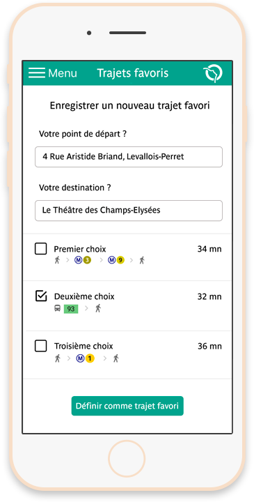
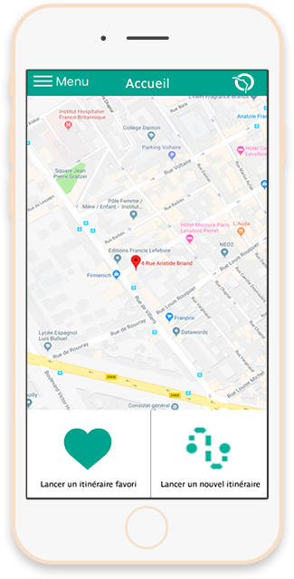

Vous n'êtes pas toujours très rassuré dans les transports ?
Vous avez besoin de savoir que vous pouvez compter sur quelqu'un à n'importe quel moment de votre trajet ?
Nous sommes la pour vous !
Disponible sur Apple Store et Google Play
Avec l'option Sérénité, nous avons pour ambition de faciliter les déplacements de tous les séniors.
 Des informations détaillées
Une communauté à l'écoute
Des agents sur place
Grâce à Sérénité, vous avez la possibilité de retrouver toutes les informations et seulement les informations dont vous avez besoin pour votre trajet. Cette option vous permet de voir en détaille les grandes étapes de votre parcours ainsi que les horaires, informations trafic et plans. Vous pouvez également retrouver toutes les informations concernant l’accessibilité des transports que vous prenez.
Vous pouvez demander de l’aide à tout moment si vous en éprouvez le besoin. Des membres de notre communauté viendront vous aider à retrouver votre chemin ou vous accompagneront si vous avez des problèmes de mobilité.
Si aucun des membres de la communauté n’est disponible pour vous aider, ne vous inquiétez pas ! Des agents sont également présents pour vous aider. Il vous suffit d’activer une carte qui localisera tous les agents proches de vous.
Aider son prochain ne fait pas qu’améliorer son karma ! Sérénité récompense les efforts de sa communauté selon les notes qui vous sont délivrées.